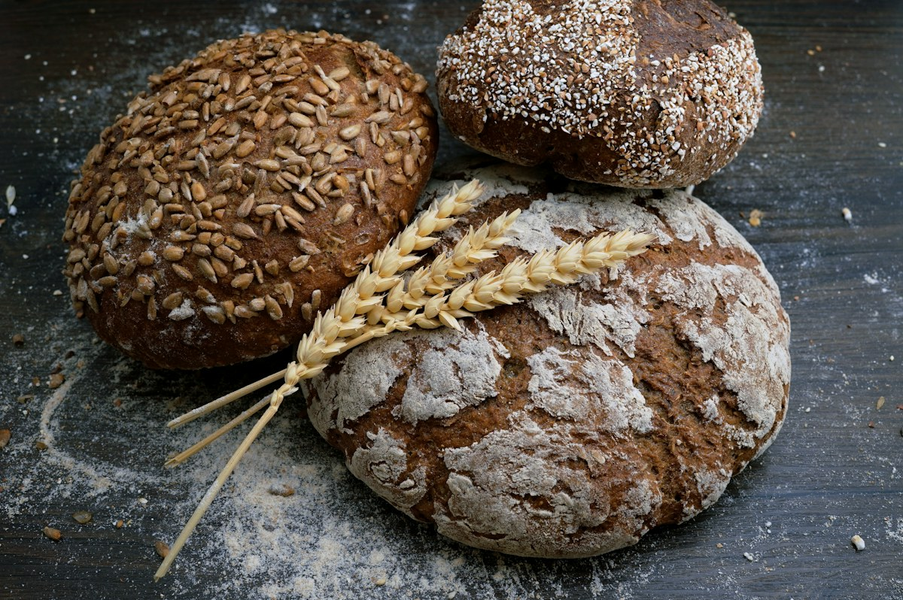
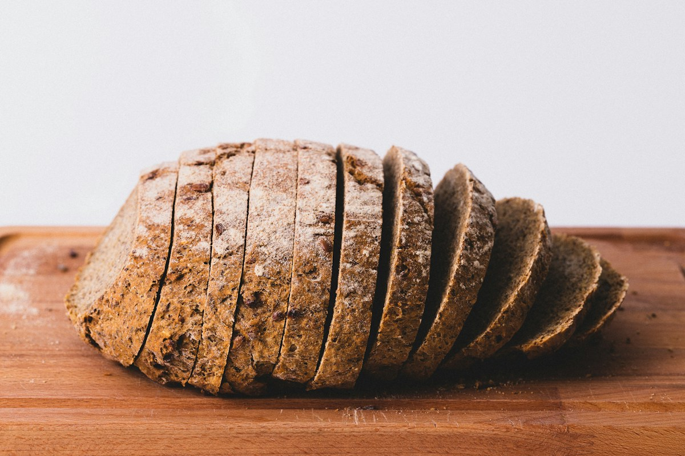
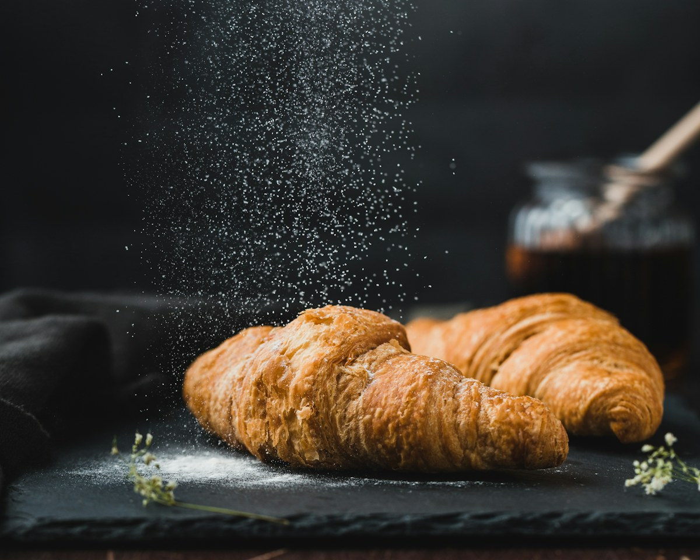
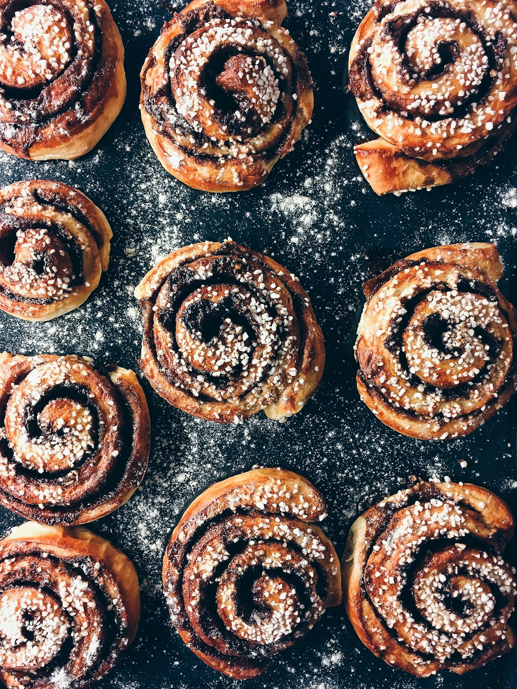

EL IMPRESCINDIBLE
Pan de masa madre
Fermentación lenta, corteza crujiente y una miga llena de carácter. Para disfrutar hasta la última rebanada.
HECHO A MANO. CADA MAÑANA.
Harina, agua, tiempo y mucho cariño. Horneamos pequeños momentos de felicidad para acompañarte cada día.
Descubre nuestros productosSin prisas, como siempre.
Pan de verdad, de nuestro horno a tu mesa.


LO SENCILLO, BIEN HECHO.NUESTRA HISTORIA
En La Espiga Dorada nos gustan las cosas sencillas: el aroma del primer horneado, la corteza que cruje y el saludo de quienes vuelven cada mañana.
Por eso amasamos a mano, respetamos los tiempos de fermentación y elegimos harinas e ingredientes de calidad. Queremos que cada bocado sepa a lo que debe: a pan de verdad.
Te esperamos en el barrioDEL HORNO A TU MESA
Recetas sencillas, manos expertas
y ese sabor que invita a volver.
Fermentación lenta, corteza crujiente y una miga llena de carácter. Para disfrutar hasta la última rebanada.

CAPAS DE FELICIDADHojaldrados a mano, con mantequilla y un delicado interior. El mejor motivo para alargar el desayuno.

UN PEQUEÑO CAPRICHOLos sabores de toda la vida, recién salidos del horno. Un toque dulce para tus mañanas y meriendas.
Horneamos cada día en pequeñas cantidades. Pregúntanos por los productos de temporada y los alérgenos.
SIEMPRE HAY UN BUEN MOTIVO
Pasa a por tu pan, elige algo dulce
y llévate un poquito de nuestro obrador.
Lunes a viernes · 7:30–20:00
Sábados · 8:00–14:30
Domingos · Descanso del obrador
Proyecto de demostración. Panadería, dirección y datos de contacto ficticios; no admiten consultas reales.